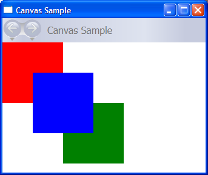
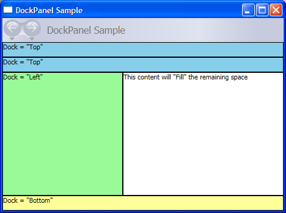
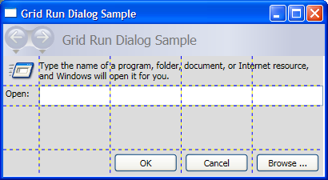
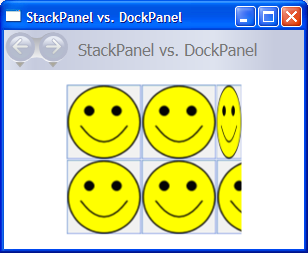
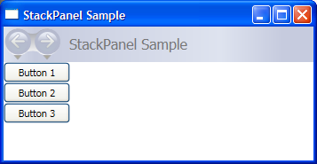
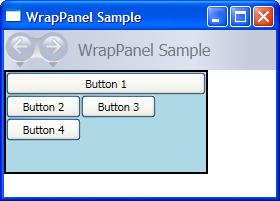
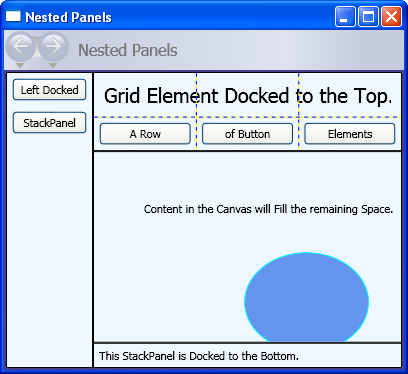

Общие сведения о панелях
Panel элементы являются компонентами, которые управляют отображением элементов — их размер и измерения, их положение и расположение их дочернего содержимого. Windows Presentation Foundation (WPF) Предоставляет ряд предопределенных Panel элементы, а также возможность создания пользовательских Panel элементов.
В этом разделе содержатся следующие подразделы.
Класс Panel
Panel является базовым классом для всех элементов, которые предоставляют макет поддерживает в Windows Presentation Foundation (WPF). Производные Panel элементы используются для размещения и упорядочения элементов в Язык XAML и кода.
WPF включает полный набор реализаций производных панели, позволяющих использовать множество сложных макетов. Эти производные классы предоставляют свойства и методы, с помощью которых реализуется большинство стандартных сценариев пользовательский интерфейс. Разработчики, которые не смогли найти поведение упорядочение дочерних, удовлетворяющих их потребности могут создать новые макеты путем переопределения ArrangeOverride и MeasureOverride методы. Дополнительные сведения о поведении пользовательских макетов см. в разделе Пользовательские элементы Panel.
Общие члены элементов Panel
Все Panel элементы поддерживают базовые изменения размеров и положения свойств, определенных FrameworkElement, в том числе Height, Width, HorizontalAlignment, VerticalAlignment, Margin, и LayoutTransform. Дополнительные сведения о свойствах, которые определяются изменения положения FrameworkElement, см. в разделе выравнивание, Margins и Padding Обзор.
Panel предоставляет дополнительные свойства, которые очень важны в понимании и использовании макета. Background Свойство используется для заполнения области между границами производного элемента панели с Brush. Children Представляет коллекцию дочерних элементов, Panel включает в себя. InternalChildren представляет содержимое Children коллекции, а также элементы, созданные привязкой данных. Оба свойства состоят UIElementCollection дочерних элементов, размещенных в родительском элементе Panel.
Панель также предоставляет Panel.ZIndex присоединенного свойства, который может использоваться для получения многослойного в производном Panel. Элементы панели Children коллекции с более высоким Panel.ZIndex значение отображаются перед элементами с более низким Panel.ZIndex значение. Это особенно полезно для панелей такие как Canvas и Grid что позволяет дочерним элементам совместно использовать одну систему координат.
Panel также определяет OnRender метод, который может использоваться для переопределения поведения представления по умолчанию Panel.
Вложенные свойства
Производные элементы панели широко используют вложенные свойства. Вложенное свойство представляет собой особую форму свойства зависимости, не имеющего обычной "оболочки" свойства среда CLR. Вложенные свойства имеют специальный синтаксис в языке Язык XAML, с которым можно познакомиться в некоторых из следующих примеров.
Одной из целей вложенного свойства является предоставление возможности дочерним элементам хранить уникальные значения свойства, фактически определенные в родительском элементе. Случаем применения данной возможности является уведомление родительского элемента со стороны дочерних элементов о способе их представления в пользовательский интерфейс, что очень полезно при создании макета приложения. Дополнительные сведения см. в разделе Общие сведения о вложенных свойствах.
Производные элементы Panel
Многие объекты являются производными от Panel, но не все из них предназначены для использования в качестве поставщиков корневого макета. Существует шесть определенных классов панелей (Canvas, DockPanel, Grid, StackPanel, VirtualizingStackPanel, и WrapPanel), предназначенных специально для создания приложений ИП.
Каждый элемент панели имеет собственные специальные возможности, представленные в следующей таблице.
| Имя элемента | Панель пользовательского интерфейса? | Описание |
|---|---|---|
| Canvas | Да | Определяет область, внутри которой можно явным образом разместить дочерние элементы с помощью координатах по отношению к Canvas области. |
| DockPanel | Да | Определяет область, в которой можно горизонтально либо вертикально упорядочивать дочерние элементы относительно друг друга. |
| Grid | Да | Определяет область с таблицей переменного размера, состоящей из столбцов и строк. Дочерние элементы Grid может быть настроено с помощью Margin свойство. |
| StackPanel | Да | Выравнивает дочерние элементы в одну линию, ориентированную горизонтально или вертикально. |
| TabPanel | Нет | Обрабатывает макет кнопок вкладки в TabControl. |
| ToolBarOverflowPanel | Нет | Упорядочивает содержимое в ToolBar элемента управления. |
| UniformGrid | Нет | UniformGrid используется для упорядочивания дочерних элементов в сетке с ячейками одинакового размера. |
| VirtualizingPanel | Нет | Предоставляет базовый класс для панелей, которые могут "виртуализировать" дочерние коллекции. |
| VirtualizingStackPanel | Да | Упорядочивает и виртуализирует одну строку содержимого, ориентированную горизонтально или вертикально. |
| WrapPanel | Да | WrapPanel Размещает дочерние элементы последовательно слева направо, перенося содержимое на следующую строку на границе содержащего поля. Дальнейшее упорядочивание происходит последовательно сверху вниз или слева направо в зависимости от значения Orientation свойство. |
Панели пользовательского интерфейса
Существует шесть классов панелей, доступных в WPF , оптимизированы для поддержки ИП сценариев: Canvas, DockPanel, Grid, StackPanel, VirtualizingStackPanel, и WrapPanel. Эти элементы панели являются простыми в использовании, гибкими и достаточно широкими для большинства приложений.
Каждый производный Panel элемент рассматривает ограничения размеров по-разному. Основные сведения о том, как Panel обрабатывает ограничения в горизонтальном или вертикальном направлении, может сделать макет более предсказуемой.
| Имя панели | Оси x | Измерение y |
|---|---|---|
| Canvas | Ограничено содержимым | Ограничено содержимым |
| DockPanel | Ограничено | Ограничено |
| StackPanel (Вертикальная ориентация) | Ограничено | Ограничено содержимым |
| StackPanel (Горизонтальная ориентация) | Ограничено содержимым | Ограничено |
| Grid | Ограничено | Ограничено, кроме случаев где Auto применяется к строкам и столбцам |
| WrapPanel | Ограничено содержимым | Ограничено содержимым |
С более подробными описаниями и примерами использования каждого из этих элементов можно ознакомиться ниже.
Canvas
Canvas Элемент позволяет размещать содержимое в соответствии с абсолютными x - и y - координаты. Элементы могут быть нарисованы в уникальном месте или, если элементы занимают одни координаты, порядок, в котором они отображаются в разметке, определяется порядком, в котором нарисованы эти элементы.
Canvas предоставляет самую гибкую поддержку макета любого Panel. Для определения области холста используются свойства высоты и ширины и элементам внутри назначаются абсолютные координаты относительно области родительского Canvas. Четыре вложенных свойства, Canvas.Left, Canvas.Top, Canvas.Right и Canvas.Bottom, точное управление расположением объекта внутри Canvas, позволяя разработчику для размещения и упорядочения элементов на экране.
Свойство ClipToBounds в элементе Canvas
Canvas можно расположить дочерние элементы в любом месте на экране, даже в координатах, находящихся за пределами определены собственные Height и Width. Кроме того Canvas не влияет размер его дочерних элементов. Таким образом, это возможно для дочернего элемента может быть нарисован поверх других элементов за пределами ограничивающего прямоугольника родительского Canvas. По умолчанию Canvas является разрешение дочерним элементам отображаться за пределами границ родительского Canvas. Если такое поведение нежелательно, ClipToBounds можно присвоить свойство true. В результате Canvas отсечения до собственного размера. Canvas является единственным элементом макета, позволяет дочерним элементам отображаться вне границ элемента.
Такое поведение графически показано в примере сравнения свойств ширины.
Определение и использование Canvas
Объект Canvas можно легко создать с помощью Язык XAML или кода. Следующий пример демонстрирует, как использовать Canvas для размещения содержимого по абсолютным. Этот код рисует три квадрата со стороной в 100 пикселей. Первый квадрат — красный и координаты (x, y) его левого верхнего угла имеют значение (0, 0). Второй квадрат — зеленый, и его левый верхний угол имеет координаты (100, 100). Он находится ниже и правее первого квадрата. Третий квадрат — синий, его левый верхний угол имеет координаты (50, 50); таким образом, он пересекается с правым нижним углом первого квадрата и левым верхним углом второго. Так как третий квадрат накладывается последним, он будет отображаться поверх первых двух квадратов — то есть пересекающиеся участки принимают цвет третьей фигуры.
// Create the application's main window
mainWindow = new Window ();
mainWindow.Title = "Canvas Sample";
// Create the Canvas
myParentCanvas = new Canvas();
myParentCanvas.Width = 400;
myParentCanvas.Height = 400;
// Define child Canvas elements
myCanvas1 = new Canvas();
myCanvas1.Background = Brushes.Red;
myCanvas1.Height = 100;
myCanvas1.Width = 100;
Canvas.SetTop(myCanvas1, 0);
Canvas.SetLeft(myCanvas1, 0);
myCanvas2 = new Canvas();
myCanvas2.Background = Brushes.Green;
myCanvas2.Height = 100;
myCanvas2.Width = 100;
Canvas.SetTop(myCanvas2, 100);
Canvas.SetLeft(myCanvas2, 100);
myCanvas3 = new Canvas();
myCanvas3.Background = Brushes.Blue;
myCanvas3.Height = 100;
myCanvas3.Width = 100;
Canvas.SetTop(myCanvas3, 50);
Canvas.SetLeft(myCanvas3, 50);
// Add child elements to the Canvas' Children collection
myParentCanvas.Children.Add(myCanvas1);
myParentCanvas.Children.Add(myCanvas2);
myParentCanvas.Children.Add(myCanvas3);
// Add the parent Canvas as the Content of the Window Object
mainWindow.Content = myParentCanvas;
mainWindow.Show ();
Warning
It looks like the sample you are looking for does not exist.
<Page WindowTitle="Canvas Sample" xmlns="http://schemas.microsoft.com/winfx/2006/xaml/presentation">
<Canvas Height="400" Width="400">
<Canvas Height="100" Width="100" Top="0" Left="0" Background="Red"/>
<Canvas Height="100" Width="100" Top="100" Left="100" Background="Green"/>
<Canvas Height="100" Width="100" Top="50" Left="50" Background="Blue"/>
</Canvas>
</Page>
Скомпилированное приложение возвращает новый ИП, который выглядит следующим образом.

DockPanel
DockPanel Элемент использует DockPanel.Dock присоединенного свойства, заданные в дочерних элементах содержимого для размещения содержимого у границ контейнера. Когда DockPanel.Dock присваивается Top или Bottom, оно располагает дочерние элементы выше или ниже друг с другом. Когда DockPanel.Dock присваивается Left или Right, оно располагает дочерние элементы слева или справа от друг с другом. LastChildFill Свойство определяет положение последнего элемента, добавленного в качестве дочернего элемента DockPanel.
Можно использовать DockPanel для размещения группы связанных элементов управления, таких как набор кнопок. Кроме того, можно использовать его для создания разделенного на панели ИП, похожего на интерфейс Microsoft Outlook.
Изменение размеров в зависимости от содержимого
Если его Height и Width свойства не указаны, DockPanel размеры его содержимого. Размер может увеличиваться или уменьшаться, чтобы вместить его дочерние элементы. Тем не менее, если заданы эти свойства и больше нет свободного места для следующего указанного дочернего элемента DockPanel не отображает этот дочерний элемент и последующие дочерние элементы и не измеряет последующие дочерние элементы.
LastChildFill
По умолчанию последний дочерний узел данного DockPanel элемент «заполнит» оставшееся незанятое пространство. Если такое поведение нежелательно, задайте LastChildFill свойства false.
Определение и использование DockPanel
В следующем примере демонстрируется разделение пространства с помощью DockPanel. Пять Border элементы добавляются как дочерние элементы родительского узла DockPanel. Каждый из них использует свое свойство размещения DockPanel для разделения пространства. Последний элемент "заполняет" оставшееся незанятое пространство.
Warning
It looks like the sample you are looking for does not exist.
// Create the application's main window
mainWindow = new Window ();
mainWindow.Title = "DockPanel Sample";
// Create the DockPanel
DockPanel myDockPanel = new DockPanel();
myDockPanel.LastChildFill = true;
// Define the child content
Border myBorder1 = new Border();
myBorder1.Height = 25;
myBorder1.Background = Brushes.SkyBlue;
myBorder1.BorderBrush = Brushes.Black;
myBorder1.BorderThickness = new Thickness(1);
DockPanel.SetDock(myBorder1, Dock.Top);
TextBlock myTextBlock1 = new TextBlock();
myTextBlock1.Foreground = Brushes.Black;
myTextBlock1.Text = "Dock = Top";
myBorder1.Child = myTextBlock1;
Border myBorder2 = new Border();
myBorder2.Height = 25;
myBorder2.Background = Brushes.SkyBlue;
myBorder2.BorderBrush = Brushes.Black;
myBorder2.BorderThickness = new Thickness(1);
DockPanel.SetDock(myBorder2, Dock.Top);
TextBlock myTextBlock2 = new TextBlock();
myTextBlock2.Foreground = Brushes.Black;
myTextBlock2.Text = "Dock = Top";
myBorder2.Child = myTextBlock2;
Border myBorder3 = new Border();
myBorder3.Height = 25;
myBorder3.Background = Brushes.LemonChiffon;
myBorder3.BorderBrush = Brushes.Black;
myBorder3.BorderThickness = new Thickness(1);
DockPanel.SetDock(myBorder3, Dock.Bottom);
TextBlock myTextBlock3 = new TextBlock();
myTextBlock3.Foreground = Brushes.Black;
myTextBlock3.Text = "Dock = Bottom";
myBorder3.Child = myTextBlock3;
Border myBorder4 = new Border();
myBorder4.Width = 200;
myBorder4.Background = Brushes.PaleGreen;
myBorder4.BorderBrush = Brushes.Black;
myBorder4.BorderThickness = new Thickness(1);
DockPanel.SetDock(myBorder4, Dock.Left);
TextBlock myTextBlock4 = new TextBlock();
myTextBlock4.Foreground = Brushes.Black;
myTextBlock4.Text = "Dock = Left";
myBorder4.Child = myTextBlock4;
Border myBorder5 = new Border();
myBorder5.Background = Brushes.White;
myBorder5.BorderBrush = Brushes.Black;
myBorder5.BorderThickness = new Thickness(1);
TextBlock myTextBlock5 = new TextBlock();
myTextBlock5.Foreground = Brushes.Black;
myTextBlock5.Text = "This content will Fill the remaining space";
myBorder5.Child = myTextBlock5;
// Add child elements to the DockPanel Children collection
myDockPanel.Children.Add(myBorder1);
myDockPanel.Children.Add(myBorder2);
myDockPanel.Children.Add(myBorder3);
myDockPanel.Children.Add(myBorder4);
myDockPanel.Children.Add(myBorder5);
// Add the parent Canvas as the Content of the Window Object
mainWindow.Content = myDockPanel;
mainWindow.Show ();
Warning
It looks like the sample you are looking for does not exist.
<Page xmlns="http://schemas.microsoft.com/winfx/2006/xaml/presentation" WindowTitle="DockPanel Sample">
<DockPanel LastChildFill="True">
<Border Height="25" Background="SkyBlue" BorderBrush="Black" BorderThickness="1" DockPanel.Dock="Top">
<TextBlock Foreground="Black">Dock = "Top"</TextBlock>
</Border>
<Border Height="25" Background="SkyBlue" BorderBrush="Black" BorderThickness="1" DockPanel.Dock="Top">
<TextBlock Foreground="Black">Dock = "Top"</TextBlock>
</Border>
<Border Height="25" Background="LemonChiffon" BorderBrush="Black" BorderThickness="1" DockPanel.Dock="Bottom">
<TextBlock Foreground="Black">Dock = "Bottom"</TextBlock>
</Border>
<Border Width="200" Background="PaleGreen" BorderBrush="Black" BorderThickness="1" DockPanel.Dock="Left">
<TextBlock Foreground="Black">Dock = "Left"</TextBlock>
</Border>
<Border Background="White" BorderBrush="Black" BorderThickness="1">
<TextBlock Foreground="Black">This content will "Fill" the remaining space</TextBlock>
</Border>
</DockPanel>
</Page>
Скомпилированное приложение возвращает новый ИП, который выглядит следующим образом.

Grid
Grid Элемент объединяет возможности абсолютного позиционирования и управления табличными данными. Объект Grid позволяет легко изменять положение и стиль элементов. Grid позволяет определить группы столбцов и строк, гибкий и предоставляет возможность распространять информацию о размере между несколькими Grid элементов.
Чем Grid отличается от Table?
Table и Grid совместно использовать некоторые общие функциональные возможности, но каждый из них лучше всего подходит для различных сценариев. Объект Table предназначен для использования в потоковом содержимом (см. в разделе Общие Дополнительные сведения о потоковом содержимом). Сетки лучше всего использовать внутри форм (по сути в любом месте вне потокового содержимого). В рамках FlowDocument, Table поддерживает поток такие возможности, как разбиение на страницы, Перекомпоновка столбцов и Выбор содержимого при Grid — нет. Объект Grid с другой стороны лучше всего использовать за пределами FlowDocument по многим причинам, в том числе Grid добавляет элементы на основе индекса строк и столбцов, Table — нет. Grid Элемент позволяет создавать слои дочернего содержимого, позволяя более чем одного элемента существовать внутри одной «ячейки». Table не поддерживает слои. Дочерние элементы Grid можно абсолютно позиционировать относительно области границ их «ячейки». Table не поддерживает эту функцию. Наконец Grid легче, чем Table.
Поведение столбцов и строк при изменении их размера
Столбцы и строки, определенные в Grid можно воспользоваться преимуществами Star изменения размера, чтобы пропорционально распределить оставшееся пространство. Когда Star выбран в качестве высоты или ширины строки или столбца, что столбец или строка получает пропорциональную часть оставшегося доступного пространства. Это отличается от Auto, который распределяет пространство равномерно с учетом размера содержимого столбца или строки. Это значение выражается как * или 2* при использовании языка Язык XAML. В первом случае строка или столбец будет получать определенное доступное пространство, а во втором случае — в два раза больше. При объединении этой методики для пропорционального распределения пространства с HorizontalAlignment и VerticalAlignment значение Stretch имеется возможность разделения пространства макета в процентах от пространства экрана. Grid является единственной панелью макета, может распределять пространство таким образом.
Определение и использование Grid
В следующем примере демонстрируется построение ИП аналогичного используемому в диалоговом окне Run, доступном в меню "Пуск" Windows.
// Create the Grid.
grid1 = new Grid ();
grid1.Background = Brushes.Gainsboro;
grid1.HorizontalAlignment = HorizontalAlignment.Left;
grid1.VerticalAlignment = VerticalAlignment.Top;
grid1.ShowGridLines = true;
grid1.Width = 425;
grid1.Height = 165;
// Define the Columns.
colDef1 = new ColumnDefinition();
colDef1.Width = new GridLength(1, GridUnitType.Auto);
colDef2 = new ColumnDefinition();
colDef2.Width = new GridLength(1, GridUnitType.Star);
colDef3 = new ColumnDefinition();
colDef3.Width = new GridLength(1, GridUnitType.Star);
colDef4 = new ColumnDefinition();
colDef4.Width = new GridLength(1, GridUnitType.Star);
colDef5 = new ColumnDefinition();
colDef5.Width = new GridLength(1, GridUnitType.Star);
grid1.ColumnDefinitions.Add(colDef1);
grid1.ColumnDefinitions.Add(colDef2);
grid1.ColumnDefinitions.Add(colDef3);
grid1.ColumnDefinitions.Add(colDef4);
grid1.ColumnDefinitions.Add(colDef5);
// Define the Rows.
rowDef1 = new RowDefinition();
rowDef1.Height = new GridLength(1, GridUnitType.Auto);
rowDef2 = new RowDefinition();
rowDef2.Height = new GridLength(1, GridUnitType.Auto);
rowDef3 = new RowDefinition();
rowDef3.Height = new GridLength(1, GridUnitType.Star);
rowDef4 = new RowDefinition();
rowDef4.Height = new GridLength(1, GridUnitType.Auto);
grid1.RowDefinitions.Add(rowDef1);
grid1.RowDefinitions.Add(rowDef2);
grid1.RowDefinitions.Add(rowDef3);
grid1.RowDefinitions.Add(rowDef4);
// Add the Image.
img1 = new Image();
img1.Source = new System.Windows.Media.Imaging.BitmapImage(new Uri("runicon.png", UriKind.Relative));
Grid.SetRow(img1, 0);
Grid.SetColumn(img1, 0);
// Add the main application dialog.
txt1 = new TextBlock();
txt1.Text = "Type the name of a program, folder, document, or Internet resource, and Windows will open it for you.";
txt1.TextWrapping = TextWrapping.Wrap;
Grid.SetColumnSpan(txt1, 4);
Grid.SetRow(txt1, 0);
Grid.SetColumn(txt1, 1);
// Add the second text cell to the Grid.
txt2 = new TextBlock();
txt2.Text = "Open:";
Grid.SetRow(txt2, 1);
Grid.SetColumn(txt2, 0);
// Add the TextBox control.
tb1 = new TextBox();
Grid.SetRow(tb1, 1);
Grid.SetColumn(tb1, 1);
Grid.SetColumnSpan(tb1, 5);
// Add the buttons.
button1 = new Button();
button2 = new Button();
button3 = new Button();
button1.Content = "OK";
button2.Content = "Cancel";
button3.Content = "Browse ...";
Grid.SetRow(button1, 3);
Grid.SetColumn(button1, 2);
button1.Margin = new Thickness(10, 0, 10, 15);
button2.Margin = new Thickness(10, 0, 10, 15);
button3.Margin = new Thickness(10, 0, 10, 15);
Grid.SetRow(button2, 3);
Grid.SetColumn(button2, 3);
Grid.SetRow(button3, 3);
Grid.SetColumn(button3, 4);
grid1.Children.Add(img1);
grid1.Children.Add(txt1);
grid1.Children.Add(txt2);
grid1.Children.Add(tb1);
grid1.Children.Add(button1);
grid1.Children.Add(button2);
grid1.Children.Add(button3);
mainWindow.Content = grid1;
Warning
It looks like the sample you are looking for does not exist.
Скомпилированное приложение возвращает новый ИП, который выглядит следующим образом.

StackPanel
Объект StackPanel позволяет «выстраивать» элементы в определенном направлении. По умолчанию направление стека является вертикальным. Orientation Свойство может использоваться для управления потоком содержимого.
Сравнение StackPanel и DockPanel
Несмотря на то что DockPanel можно также «стопку» дочерних элементов, DockPanel и StackPanel не дают аналогичных результатов в некоторых случаях использования. Например, порядок дочерних элементов может повлиять на их размер в DockPanel , но не в StackPanel. Это обусловлено StackPanel направлении стека в PositiveInfinity, тогда как DockPanel измеряет только доступный размер.
Следующий пример демонстрирует это ключевое различие.
Warning
It looks like the sample you are looking for does not exist.
// Create the application's main window
mainWindow = new Window ();
mainWindow.Title = "StackPanel vs. DockPanel";
// Add root Grid
myGrid = new Grid();
myGrid.Width = 175;
myGrid.Height = 150;
RowDefinition myRowDef1 = new RowDefinition();
RowDefinition myRowDef2 = new RowDefinition();
myGrid.RowDefinitions.Add(myRowDef1);
myGrid.RowDefinitions.Add(myRowDef2);
// Define the DockPanel
myDockPanel = new DockPanel();
Grid.SetRow(myDockPanel, 0);
//Define an Image and Source
Image myImage = new Image();
BitmapImage bi = new BitmapImage();
bi.BeginInit();
bi.UriSource = new Uri("smiley_stackpanel.png", UriKind.Relative);
bi.EndInit();
myImage.Source = bi;
Image myImage2 = new Image();
BitmapImage bi2 = new BitmapImage();
bi2.BeginInit();
bi2.UriSource = new Uri("smiley_stackpanel.png", UriKind.Relative);
bi2.EndInit();
myImage2.Source = bi2;
Image myImage3 = new Image();
BitmapImage bi3 = new BitmapImage();
bi3.BeginInit();
bi3.UriSource = new Uri("smiley_stackpanel.PNG", UriKind.Relative);
bi3.EndInit();
myImage3.Stretch = Stretch.Fill;
myImage3.Source = bi3;
// Add the images to the parent DockPanel
myDockPanel.Children.Add(myImage);
myDockPanel.Children.Add(myImage2);
myDockPanel.Children.Add(myImage3);
//Define a StackPanel
myStackPanel = new StackPanel();
myStackPanel.Orientation = Orientation.Horizontal;
Grid.SetRow(myStackPanel, 1);
Image myImage4 = new Image();
BitmapImage bi4 = new BitmapImage();
bi4.BeginInit();
bi4.UriSource = new Uri("smiley_stackpanel.png", UriKind.Relative);
bi4.EndInit();
myImage4.Source = bi4;
Image myImage5 = new Image();
BitmapImage bi5 = new BitmapImage();
bi5.BeginInit();
bi5.UriSource = new Uri("smiley_stackpanel.png", UriKind.Relative);
bi5.EndInit();
myImage5.Source = bi5;
Image myImage6 = new Image();
BitmapImage bi6 = new BitmapImage();
bi6.BeginInit();
bi6.UriSource = new Uri("smiley_stackpanel.PNG", UriKind.Relative);
bi6.EndInit();
myImage6.Stretch = Stretch.Fill;
myImage6.Source = bi6;
// Add the images to the parent StackPanel
myStackPanel.Children.Add(myImage4);
myStackPanel.Children.Add(myImage5);
myStackPanel.Children.Add(myImage6);
// Add the layout panels as children of the Grid
myGrid.Children.Add(myDockPanel);
myGrid.Children.Add(myStackPanel);
// Add the Grid as the Content of the Parent Window Object
mainWindow.Content = myGrid;
mainWindow.Show ();
Warning
It looks like the sample you are looking for does not exist.
<Page xmlns="http://schemas.microsoft.com/winfx/2006/xaml/presentation"
WindowTitle="StackPanel vs. DockPanel">
<Grid Width="175" Height="150">
<Grid.ColumnDefinitions>
<ColumnDefinition />
</Grid.ColumnDefinitions>
<Grid.RowDefinitions>
<RowDefinition />
<RowDefinition />
</Grid.RowDefinitions>
<DockPanel Grid.Column="0" Grid.Row="0">
<Image Source="smiley_stackpanel.png" />
<Image Source="smiley_stackpanel.png" />
<Image Source="smiley_stackpanel.png" Stretch="Fill"/>
</DockPanel>
<StackPanel Grid.Column="0" Grid.Row="1" Orientation="Horizontal">
<Image Source="smiley_stackpanel.png" />
<Image Source="smiley_stackpanel.png" />
<Image Source="smiley_stackpanel.png" Stretch="Fill"/>
</StackPanel>
</Grid>
</Page>
На этом рисунке видна разница в поведении отрисовки.

Определение и использование StackPanel
Следующий пример демонстрирует, как использовать StackPanel для создания набора вертикально расположенных кнопок. Для горизонтального расположения задайте Orientation свойства Horizontal.
// Create the application's main window
mainWindow = new Window ();
mainWindow.Title = "StackPanel Sample";
// Define the StackPanel
myStackPanel = new StackPanel();
myStackPanel.HorizontalAlignment = HorizontalAlignment.Left;
myStackPanel.VerticalAlignment = VerticalAlignment.Top;
// Define child content
Button myButton1 = new Button();
myButton1.Content = "Button 1";
Button myButton2 = new Button();
myButton2.Content = "Button 2";
Button myButton3 = new Button();
myButton3.Content = "Button 3";
// Add child elements to the parent StackPanel
myStackPanel.Children.Add(myButton1);
myStackPanel.Children.Add(myButton2);
myStackPanel.Children.Add(myButton3);
// Add the StackPanel as the Content of the Parent Window Object
mainWindow.Content = myStackPanel;
mainWindow.Show ();
Warning
It looks like the sample you are looking for does not exist.
Скомпилированное приложение возвращает новый ИП, который выглядит следующим образом.

VirtualizingStackPanel
WPF также предоставляет разновидность StackPanel элемент, который автоматически «виртуализирует» привязкой к данным дочернего содержимого. В данном контексте слово "виртуализация" означает способ, с помощью которого подмножество элементов создается из большего количества элементов данных в зависимости от того, какие из элементов отображаются на экране. Как для памяти, так и для процессора затратно создавать большое число элементов пользовательского интерфейса, при том что только несколько из них могут отображаться на экране одновременно. VirtualizingStackPanel (с помощью функций, предоставляемых VirtualizingPanel) подсчитывает видимые элементы и работает с ItemContainerGenerator из ItemsControl (такие как ListBox или ListView) создавать только элементы для видимых элементов.
VirtualizingStackPanel Элемент автоматически устанавливается как узел элементов для элементов управления, такие как ListBox. При размещении данных присоединенной коллекции, содержимое будет автоматически виртуализировано, до тех пор, пока оно находится в границах ScrollViewer. Это значительно повышает производительность при размещении большого числа дочерних элементов.
Следующая разметка демонстрирует использование VirtualizingStackPanel качестве узла элементов. VirtualizingStackPanel.IsVirtualizingProperty Присоединенное свойство должно быть присвоено true (по умолчанию) для виртуализации, возникает.
<StackPanel DataContext="{Binding Source={StaticResource Leagues}}">
<TextBlock Text="{Binding XPath=@name}" FontFamily="Arial" FontSize="18" Foreground="Black"/>
<ListBox VirtualizingStackPanel.IsVirtualizing="True"
ItemsSource="{Binding XPath=Team}"
ItemTemplate="{DynamicResource NameDataStyle}"/>
</StackPanel>
WrapPanel
WrapPanel используется для размещения дочерних элементов в последовательности слева направо, перенося содержимое на следующую строку при достижении границы родительского контейнера. Содержимое может быть ориентировано горизонтально или вертикально. WrapPanel полезно, когда пользовательский интерфейс сценариев. Его также можно использовать для установления единого размера для всех его дочерних элементов.
Следующий пример демонстрирует создание WrapPanel для отображения Button элементов управления, которые переносятся при достижении границы контейнера.
Warning
It looks like the sample you are looking for does not exist.
// Create the application's main window
mainWindow = new System.Windows.Window();
mainWindow.Title = "WrapPanel Sample";
// Instantiate a new WrapPanel and set properties
myWrapPanel = new WrapPanel();
myWrapPanel.Background = System.Windows.Media.Brushes.Azure;
myWrapPanel.Orientation = Orientation.Horizontal;
myWrapPanel.Width = 200;
myWrapPanel.HorizontalAlignment = HorizontalAlignment.Left;
myWrapPanel.VerticalAlignment = VerticalAlignment.Top;
// Define 3 button elements. The last three buttons are sized at width
// of 75, so the forth button wraps to the next line.
btn1 = new Button();
btn1.Content = "Button 1";
btn1.Width = 200;
btn2 = new Button();
btn2.Content = "Button 2";
btn2.Width = 75;
btn3 = new Button();
btn3.Content = "Button 3";
btn3.Width = 75;
btn4 = new Button();
btn4.Content = "Button 4";
btn4.Width = 75;
// Add the buttons to the parent WrapPanel using the Children.Add method.
myWrapPanel.Children.Add(btn1);
myWrapPanel.Children.Add(btn2);
myWrapPanel.Children.Add(btn3);
myWrapPanel.Children.Add(btn4);
// Add the WrapPanel to the MainWindow as Content
mainWindow.Content = myWrapPanel;
mainWindow.Show();
Warning
It looks like the sample you are looking for does not exist.
<Page xmlns="http://schemas.microsoft.com/winfx/2006/xaml/presentation" WindowTitle="WrapPanel Sample">
<Border HorizontalAlignment="Left" VerticalAlignment="Top" BorderBrush="Black" BorderThickness="2">
<WrapPanel Background="LightBlue" Width="200" Height="100">
<Button Width="200">Button 1</Button>
<Button>Button 2</Button>
<Button>Button 3</Button>
<Button>Button 4</Button>
</WrapPanel>
</Border>
</Page>
Скомпилированное приложение возвращает новый ИП, который выглядит следующим образом.

Вложенные элементы Panel
Panel элементы могут быть вложены друг к другу для создания сложных макетов. Это может оказаться очень полезным в ситуациях, где одно Panel идеально подходит для части ИП, но не может удовлетворить потребности другой части ИП.
Практически не существует ограничения объема вложения, которое может поддерживать приложение, но лучше ограничить приложение использованием только тех панелей, которые действительно необходимы для макета. Во многих случаях Grid элемент может использоваться вместо вложенных панелей благодаря его гибкости в качестве контейнера макета. Это может повысить производительность приложения, убирая ненужные элементы из дерева.
Следующий пример демонстрирует создание ИП , использующего преимущества вложенных Panel элементы, чтобы получить определенный макет. В данном конкретном случае DockPanel элемент используется для предоставления ИП структурировать и вложенными StackPanel элементов, Gridи Canvas используются для размещения дочерних элементов внутри родительского DockPanel.
// Define the DockPanel.
myDockPanel = new DockPanel();
// Add the Left Docked StackPanel
Border myBorder2 = new Border();
myBorder2.BorderThickness = new Thickness(1);
myBorder2.BorderBrush = Brushes.Black;
DockPanel.SetDock(myBorder2, Dock.Left);
StackPanel myStackPanel = new StackPanel();
Button myButton1 = new Button();
myButton1.Content = "Left Docked";
myButton1.Margin = new Thickness(5);
Button myButton2 = new Button();
myButton2.Content = "StackPanel";
myButton2.Margin = new Thickness(5);
myStackPanel.Children.Add(myButton1);
myStackPanel.Children.Add(myButton2);
myBorder2.Child = myStackPanel;
// Add the Top Docked Grid.
Border myBorder3 = new Border();
myBorder3.BorderThickness = new Thickness(1);
myBorder3.BorderBrush = Brushes.Black;
DockPanel.SetDock(myBorder3, Dock.Top);
Grid myGrid = new Grid();
myGrid.ShowGridLines = true;
RowDefinition myRowDef1 = new RowDefinition();
RowDefinition myRowDef2 = new RowDefinition();
ColumnDefinition myColDef1 = new ColumnDefinition();
ColumnDefinition myColDef2 = new ColumnDefinition();
ColumnDefinition myColDef3 = new ColumnDefinition();
myGrid.ColumnDefinitions.Add(myColDef1);
myGrid.ColumnDefinitions.Add(myColDef2);
myGrid.ColumnDefinitions.Add(myColDef3);
myGrid.RowDefinitions.Add(myRowDef1);
myGrid.RowDefinitions.Add(myRowDef2);
TextBlock myTextBlock1 = new TextBlock();
myTextBlock1.FontSize = 20;
myTextBlock1.Margin = new Thickness(10);
myTextBlock1.Text = "Grid Element Docked at the Top";
Grid.SetRow(myTextBlock1, 0);
Grid.SetColumnSpan(myTextBlock1, 3);
Button myButton3 = new Button();
myButton3.Margin = new Thickness(5);
myButton3.Content = "A Row";
Grid.SetColumn(myButton3, 0);
Grid.SetRow(myButton3, 1);
Button myButton4 = new Button();
myButton4.Margin = new Thickness(5);
myButton4.Content = "of Button";
Grid.SetColumn(myButton4, 1);
Grid.SetRow(myButton4, 1);
Button myButton5 = new Button();
myButton5.Margin = new Thickness(5);
myButton5.Content = "Elements";
Grid.SetColumn(myButton5, 2);
Grid.SetRow(myButton5, 1);
myGrid.Children.Add(myTextBlock1);
myGrid.Children.Add(myButton3);
myGrid.Children.Add(myButton4);
myGrid.Children.Add(myButton5);
myBorder3.Child = myGrid;
// Add the Bottom Docked StackPanel.
Border myBorder4 = new Border();
myBorder4.BorderBrush = Brushes.Black;
myBorder4.BorderThickness = new Thickness(1);
DockPanel.SetDock(myBorder4, Dock.Bottom);
StackPanel myStackPanel2 = new StackPanel();
myStackPanel2.Orientation = Orientation.Horizontal;
TextBlock myTextBlock2 = new TextBlock();
myTextBlock2.Text = "This StackPanel is Docked to the Bottom";
myTextBlock2.Margin = new Thickness(5);
myStackPanel2.Children.Add(myTextBlock2);
myBorder4.Child = myStackPanel2;
// Add the Canvas, that fills remaining space.
Border myBorder5 = new Border();
myBorder4.BorderBrush = Brushes.Black;
myBorder5.BorderThickness = new Thickness(1);
Canvas myCanvas = new Canvas();
myCanvas.ClipToBounds = true;
TextBlock myTextBlock3 = new TextBlock();
myTextBlock3.Text = "Content in the Canvas will Fill the remaining space.";
Canvas.SetTop(myTextBlock3, 50);
Canvas.SetLeft(myTextBlock3, 50);
Ellipse myEllipse = new Ellipse();
myEllipse.Height = 100;
myEllipse.Width = 125;
myEllipse.Fill = Brushes.CornflowerBlue;
myEllipse.Stroke = Brushes.Aqua;
Canvas.SetTop(myEllipse, 100);
Canvas.SetLeft(myEllipse, 150);
myCanvas.Children.Add(myTextBlock3);
myCanvas.Children.Add(myEllipse);
myBorder5.Child = myCanvas;
// Add child elements to the parent DockPanel.
myDockPanel.Children.Add(myBorder2);
myDockPanel.Children.Add(myBorder3);
myDockPanel.Children.Add(myBorder4);
myDockPanel.Children.Add(myBorder5);
Warning
It looks like the sample you are looking for does not exist.
Скомпилированное приложение возвращает новый ИП, который выглядит следующим образом.

Пользовательские элементы Panel
Хотя WPF предоставляет целый ряд гибких элементов управления макетом, настраиваемый макет, также поведения можно достигнуть путем переопределения ArrangeOverride и MeasureOverride методы. Пользовательские изменения размеров и положения могут быть выполнены путем определения нового поведения размещения с помощью этих методов переопределения.
Аналогичным образом, пользовательские расширения функциональности макета на основе производных классов (таких как Canvas или Grid) можно задать путем переопределения их ArrangeOverride и MeasureOverride методы.
Следующая разметка демонстрирует создание пользовательского Panel элемент. Этот новый Panel, определенная как PlotPanel, поддерживает размещение дочерних элементов с использованием жестко x - и y - координаты. В этом примере Rectangle элемент (не показан) находится в точке с координатами 50 (x) до 50 (y).
Warning
It looks like the sample you are looking for does not exist.
public class PlotPanel : Panel
{
// Default public constructor
public PlotPanel()
: base()
{
}
// Override the default Measure method of Panel
protected override Size MeasureOverride(Size availableSize)
{
Size panelDesiredSize = new Size();
// In our example, we just have one child.
// Report that our panel requires just the size of its only child.
foreach (UIElement child in InternalChildren)
{
child.Measure(availableSize);
panelDesiredSize = child.DesiredSize;
}
return panelDesiredSize ;
}
protected override Size ArrangeOverride(Size finalSize)
{
foreach (UIElement child in InternalChildren)
{
double x = 50;
double y = 50;
child.Arrange(new Rect(new Point(x, y), child.DesiredSize));
}
return finalSize; // Returns the final Arranged size
}
}
Warning
It looks like the sample you are looking for does not exist.
Более сложные реализации пользовательских панелей можно найти в разделе примера создания пользовательской панели с переносом содержимого.
Поддержка локализации и глобализации
WPF поддерживает ряд функций, которые помогают в создании локализуемого ИП.
Все элементы панели изначально поддерживают FlowDirection свойство, которое может использоваться для динамического содержимого на основе параметров языкового стандарта или языка пользователя. Дополнительные сведения см. в разделе FlowDirection.
SizeToContent Свойство предоставляет механизм, который позволяет разработчикам приложений предвидеть потребности локализованного ИП. С помощью WidthAndHeight значение этого свойства родительского Window всегда динамически изменяет размер в соответствии с размером и не ограничивается искусственных ограничений высоты или ширины.
DockPanel, Grid, и StackPanel — это хороший выбор для локализуемых ИП. Canvas Тем не менее, является не лучшим выбором, так как он размещает содержимое абсолютно, что затрудняет локализацию.
Дополнительные сведения о создании приложений WPF с локализуемыми пользовательские интерфейсы (UI) см. в разделе Обзор использования автоматической разметки.
См. также
- Пошаговое руководство. Создание классического приложения WPF
- Пример коллекции макетов WPF
- Макет
- Пример коллекции элементов управления WPF
- Общие сведения о свойствах Alignment, Margin, Padding
- Создание пользовательского содержимого пример
- Общие сведения о вложенных свойствах зависимостей
- Обзор использования автоматической разметки
- Разметка и разработка